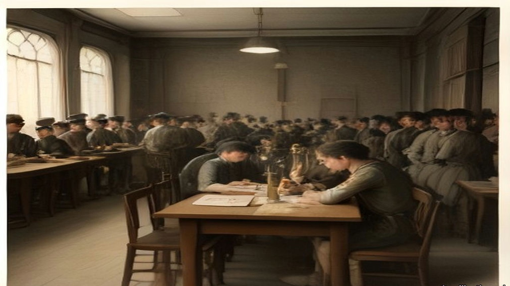
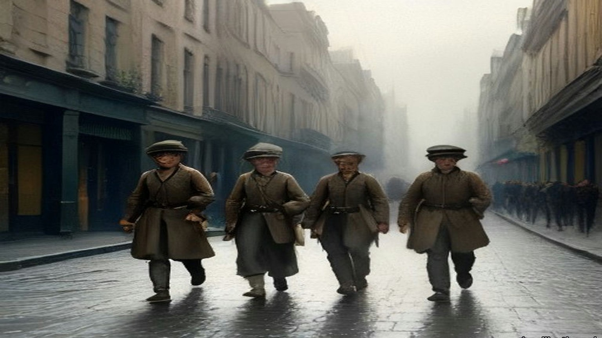
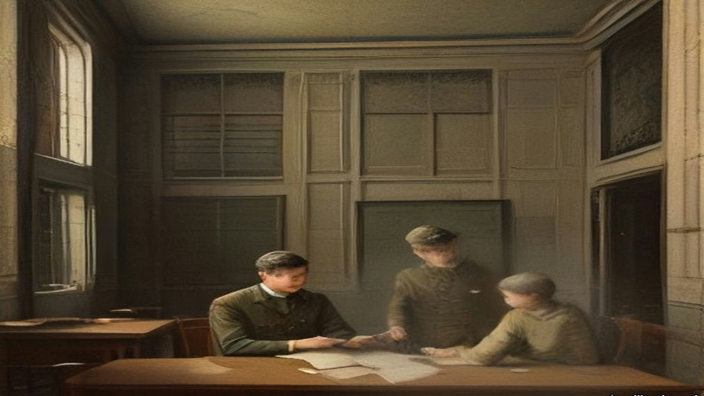
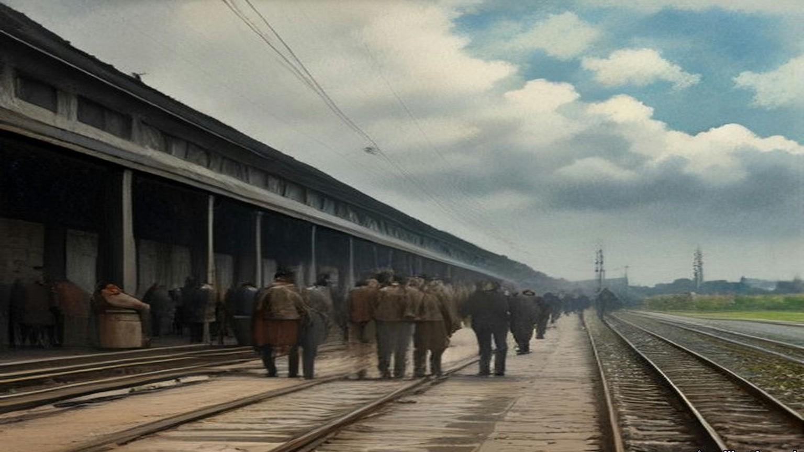
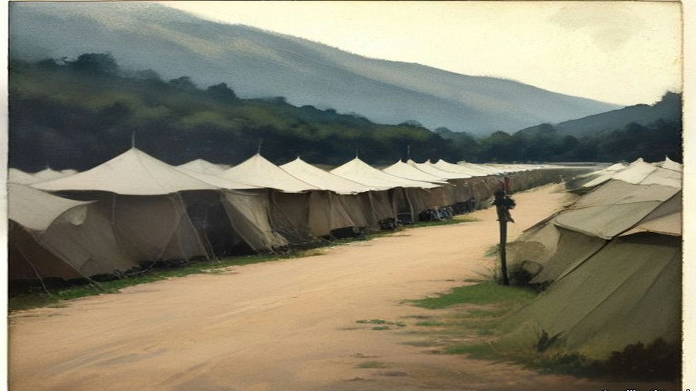
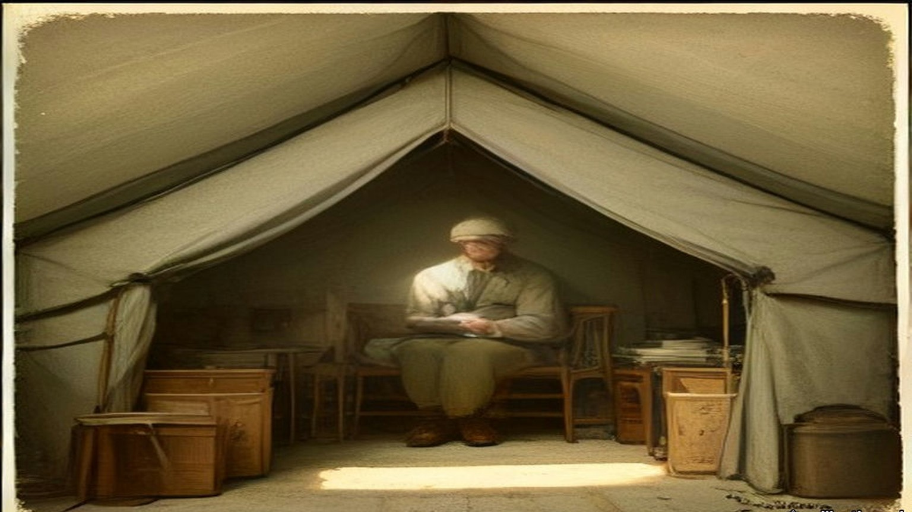
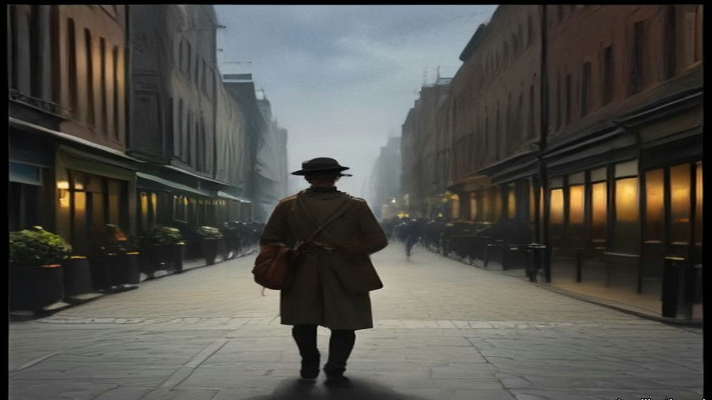

Chapter 21
Ten Shillings a Day for Palestine, 1922
Westminster, Dublin and Carton, February to August 1922
House of Commons, Wednesday, 8 February 1922
Lieutenant-Colonel Martin Archer-Shee had a cheque in his question. It was for £25 10s., drawn on His Majesty's Service on the Bank of Ireland by the Paymaster of the Depot Company, Auxiliary Division, Royal Irish Constabulary, in favour of Mr. L. J. Leipold, late of Z Company. It was Leipold's pay on disbandment, after Income Tax had been taken off it. Leipold had signed a receipt for it at Beggars Bush on 23 January. The Bank of Ireland had dishonoured it.
Archer-Shee put the case to the Chief Secretary for Ireland, Sir Hamar Greenwood, by private notice. He wanted to know whether it would be put right at once, whether there were other cheques out to ex-members of the Division that would not be honoured, and whether Greenwood knew what this did to the men. They had drawn cheques of their own against the money, he said, expecting the Government's to clear, and now their own cheques could bounce.
Greenwood said he regretted it. A number of cheques drawn in favour of members of the Auxiliary Division had, "through an oversight in the demobilisation arrangements," been returned to the payee. Steps had been taken at once to rectify the error.
The next day the House had the terms. Sir Charles Yate asked about the dissatisfaction expressed in the press at the terms on which the ex-officer cadets had been disbanded. Viscount Curzon asked whether disbandment broke the men's contracts, and said many of the Auxiliaries were without any means whatever. Greenwood gave the figures. Men whose contracts ran past 31 March would be paid at the contract rate to the end of the contract. Men whose contracts ran out before 31 March, or had already run out, would be paid to 31 March. Every cadet had received an advance of £30 on demobilisation. No cadet would get less than £70, and those with longer contracts would get more on top. Hansard prints the range of those extra sums with the lower figure missing: "varying from £ to £250." In Committee eleven days later Greenwood gave it again, "amounts ranging from £1 to £250." The total was £210,000. "The average sum per cadet is £140."
Yate said there seemed to be a general complaint that the men who had done least service got most. Greenwood said there was no ground for general complaint. A cadet with a particular complaint knew where to send it.
Kenworthy wanted to know whether the cadets were finally gone. "They have been demobilised," Greenwood said. "Only a few small details are left in Ireland now."
Archer-Shee came back to it a fortnight later with another man, J. C. J. Towner, an Auxiliary cadet in Dr. Steevens' Hospital in Dublin. He had been sent there on 1 October, suffering from the effect of severe chill and lumbago. Towner's pay had been stopped from 11 December. Since 13 January he had been charged 7s. a day in hospital fees. His separation allowance had been stopped. He had a wife and family and was exempt from Income Tax, Archer-Shee said, and £19 10s. had been taken off his pay for it anyway. With the tax and the fees, £64 17s. had been taken from his arrears. He had been demobilised while he lay ill in the hospital. He said the board of investigation had found that his illness was due to service. Greenwood thanked Archer-Shee for bringing the case to his notice, and said he was having immediate inquiry made.

* * *
House of Commons, Thursday, 16 February 1922
Colonel John Newman had two questions down, numbers 55 and 56.
The first was about the cheques. Because they were paid by cheque on the Bank of Ireland, he said, demobilised members of the Auxiliary Division had to wait over a week for the money due to them. Income Tax was being deducted arbitrarily, and refunds were slow and hard to get.
Greenwood answered for the Irish Office. Personal payment was impossible, so payment was by cheque, and since payment was made from Dublin the cheques were drawn on the Bank of Ireland. "The next and final payment is due not later than 31st March, and cheques will be posted in time to enable clearance to be made before that date." Income Tax was assessed and deducted from the pay of these ex-cadets as from the pay of all other public servants. Any complaint about it was promptly investigated. "I am informed, however, that no such case has arisen."
Newman's second question was about a new force. The Inspector-General of the Royal Irish Constabulary, he said, had been able to promise demobilised Auxiliaries preferential treatment in recruiting for the new police force being raised for service in Palestine. But only single men were being taken. If married men agreed to serve without extra pay or emoluments of any sort, would the Government ask the recruiting authorities to give them the same preference?
Winston Churchill, the Colonial Secretary, took it. "The main reason for which it is desired to constitute the force primarily from unmarried men is that there is no accommodation for men's wives in Palestine." And there was the money. "I may add that, if, as the hon. and gallant Member suggests, separation allowance is not to be paid the men would have difficulty in contributing to the support of their absentee wives and families."
"Suppose these men are willing to take the risk?" Newman said. "Why should they not be allowed?"
"I was not aware that any absolute bar had been imposed," Churchill said, "but I think it is important that every one joining the force should know there is no accommodation for women and children out there."
A month later Lieutenant-Colonel Henry Page Croft asked the Secretary of State for War whether married members of the R.I.C. had been told they were not eligible for the Palestine gendarmerie, and whether married men had since been taken anyway. Churchill gave the written answer. "No, Sir." Conditions of service in Palestine were "not regarded as altogether favourable to married life." The recruiting officers had been told to prefer the unmarried, but there had been no absolute bar against married men, "and, indeed, the estimates of the force make provision for a proportion of married personnel."

* * *
House of Commons, Committee of Supply, Monday, 20 February 1922
Sir Hamar Greenwood stood up to ask the Committee for a supplementary sum not exceeding £1,474,370 for the Royal Irish Constabulary, for the year ending 31 March 1922.
He said he regretted the need for it, and offered two consolations. The sum was less by many millions than it would have been without the Truce in July and the Treaty in December. And he hoped that, apart from pensions and gratuities, it was the final charge on the taxpayers of Great Britain for the policing of Southern Ireland.
The extra money came from two causes, he said. One was the growth of the force and its transport in the first half of 1921. The other was the terminal charges of the disbandment, after the Treaty, of the Auxiliary Division and the temporary constables. More than 6,000 officers and men recruited in Great Britain had been disbanded since the Treaty was signed and had left Ireland. The regular R.I.C. still in Ireland was "almost entirely Irish and predominantly Catholic": 233 officers and 5,764 other ranks in the South, 50 officers and 2,059 other ranks in the North. Since the Truce twelve of them had been murdered and twenty-seven wounded.
Under Subhead B he wanted £371,443 for the pay of police, and he broke it down. £225,000 was for the ordinary pay and disbandment pay of the Auxiliaries and the temporary constables. "These men were recruited under non-pensionable contracts. This Vote provides the money necessary for the complete discharge of the Government's liabilities under these contracts." He gave the House the £70 again, and the extra sums, "ranging from £1 to £250." The complaints he had received, he said, were not complaints against the Government, but complaints that some comrades, "owing to the accident of the date when they enlisted," were getting more. The representative body of the Division, through its president and delegates, had accepted the terms in an agreement signed on 18 January. There was £66,447 for the Special Constabulary in the North up to 22 November, and £80,000 to pay the purely Irish R.I.C. ahead of 1 April so that the police accounts could be closed by the end of the financial year. "The more expeditious one can make the disbandment, the greater the saving in money."
Then the funerals. The last item of the subhead was public money for the funeral expenses of men murdered or accidentally killed in the discharge of duty. "I regret to say that there were 310 of these funerals payable out of the Supplementary Estimate."
Colonel Josiah Wedgwood said that his side would vote against the whole Estimate "as a protest against wasting our money on dishonourable work, so dishonourable, indeed, that the Government themselves have had to drop it." He asked whether it was really a fact that the Auxiliaries were getting retiring allowances of £250 each. "No, it is not a fact," Archer-Shee said. When Kenworthy came back to the £250 later, Archer-Shee told him: "They do not get a gratuity of £250. That is the money the Government contracted to pay them." Kenworthy asked whether the cadets had in many cases never left Government service at all, "but were at once shipped off to police forces elsewhere, and a great many were offered suitable employment in Palestine." Greenwood had put £40,000 into the Estimate for sending home the men recruited in Great Britain, 6,622 of them. Sir Frederick Banbury made it "about £16 a head." "It seems a large amount for travelling expenses from Ireland, which is not such a very long way off."
Jack Jones broke in. "What about the stuff they ordered and never paid for?"
The next afternoon Jones put it in a question. The Commandant of the Division had appealed to the companies for money to pay what they owed local tradesmen in Ireland, and men who were not in debt had paid for those who were, under the impression that future Government employment depended on it. Greenwood said that considerable sums had been owing by various companies for mess supplies. No one still serving could be held responsible, so the Commandant had appealed for subscriptions. "There was a ready response, and the amount forthcoming represented subscriptions of about 25s. per member." Jones asked whether it was fair that men who had not levied a tribute on the shopkeepers should pay for those who had. "I accept neither the preliminary premises nor the conclusions of the hon. Member," Greenwood said.
The shopkeepers had their own member. Sir Maurice Dockrell told the House on 23 February about G Company at Killaloe, in County Clare. It had opened accounts with the shops there for its mess and canteen when it arrived in November 1920, and left a large sum unpaid when it moved to Corofin in July 1921. On the evening of 2 January 1922 Colonel Guard, second in command of the Division, had offered the shopkeepers part payment and given them until the next morning to accept it in full discharge, or be paid nothing. On 2 March Joseph Hogge, asking in Kenworthy's absence, raised Messrs. James Bourke and Sons, owed £128 1s. 9d. by A Company at Woodstock, County Kilkenny. Greenwood said that if these were private debts, the Government could no more accept responsibility for them than for the private debts of any other branch of His Majesty's Service. If they were public debts, the question would be different, and he was making inquiries. On 29 March Dockrell came back. Greenwood had told him in a letter that £1,000 towards part payment had come from the fines fund of the Division. Messrs. Evans of Limerick had agreed their debt of £460 with the authorities in November and had never been paid. Greenwood said he had nothing to add. The tradesmen had accepted the receipts in full payment at the time.
"Under duress," Dockrell said.

* * *
House of Commons, 28 February to 16 March 1922
Lieutenant-Commander Joseph Kenworthy, the member for Central Hull, had been asking about the new force since February. On 28 February he put down a written question. Was a force of constabulary being raised for the Middle East? How strong? At what cost? For which countries? Who would pay? Would natives of Asia and Africa be enrolled, and aliens?
Churchill answered in writing. "A force of British gendarmerie is being raised at the present time for service in Palestine. Its total strength will be about 700 of all ranks. It is estimated that its recurrent cost will be about £280,000 per annum. The question of the incidence of this expenditure is still under discussion. The personnel will be exclusively British."
On 9 March Allen Parkinson asked the War Office whether the men who had served in Ireland as Black and Tans were being re-engaged for service in Egypt and India at £1 a day, with a gratuity of more than £200 at the end. Churchill gave the written answer. "The answer is in the negative. If the hon. Member is referring to the British section of the Palestine Gendarmerie, which is being largely recruited from ex-members of the various police forces in Ireland, the rate of pay of constables of this force is 10s. a day, with rations and quarters, and a small gratuity if their services are dispensed with before they have earned a pension."
Kenworthy asked again on 14 March, at question time, about pay, horses, motor transport and who would pay. Churchill presumed he meant the British section of the Palestine Gendarmerie, and gave the rates. Constables, 10s. a day. Sergeants, 12s. Head Constables, 15s. Junior Inspectors, 20s. Senior Inspectors, 22s. All of it "with free rations, quarters, arms, equipment, and clothing or an allowance in lieu thereof." There was a commandant "with salary at the rate of £1,000 a year and one or two headquarters officers with pay at appropriate rates." The force would be unmounted. Motor transport would be provided on a scale of "two light lorries and two box cars for each platoon." Kenworthy had asked who would pay. "The incidence of cost is still under consideration," Churchill said.
Kenworthy asked whether this Middle East constabulary was to be employed only in Palestine or elsewhere as well.
"Only in Palestine."
An Auxiliary cadet's average on disbandment, by Greenwood's figure of 9 February, was £140 for the whole of it. A constable in Palestine at 10s. a day would draw £182 10s. in a year, with his rations, quarters and clothes found.
On 3 May Sir John Norton-Griffiths asked Churchill to publish the conditions of service under which ex-members of the R.I.C. had entered the British gendarmerie in Palestine. Edward Wood, the Under-Secretary for the Colonies, answered that "the expense of publication hardly seems justified in the circumstances," but he would be happy to supply a copy of the agreement to any member who asked. The next day Norton-Griffiths wanted to know under what authority the gendarmerie would act at all, since the Treaty of Sèvres, which had authorised the mandate for Palestine, had never been ratified. Wood answered again. "The British gendarmerie exercise their functions under the authority of the Palestine Government. The non-ratification of the Treaty of Sevres does not absolve the Palestine Government from the duty of maintaining order."

* * *
Ireland and the Commons, March to May 1922
Sir John Butcher sat for York, and from March on he made the disbanding of the R.I.C. his business in the House. Greenwood's terms for the regular men were not the Auxiliaries' terms. On 2 March he gave them to the House: "every man shall receive the pension corresponding to his actual service, with an addition to that service of 12 years," or ten if his pension was reckoned in fiftieths. The pension could be suspended while the pensioner served in any other police force.
The British recruits went first. By 8 March they were the only men of the regular force disbanded, on the terms of the Ninth Schedule to the Act of 1920. On 9 March Greenwood said that the men had been given an advance of £10 at dispersal, "representing, in most cases, over two months' pension." On 11 April Butcher complained that Income Tax not yet assessed was being taken off the pensions of disbanded men. The Financial Secretary to the Treasury, Hilton Young, took the question to mean the British recruits, and said that the arrears for the past year were being taken by monthly instalments of £1, and that the men "were aware, or ought to have been aware, of the approximate amount of their liability."
On 16 March Greenwood said that concentration of the R.I.C. in the South of Ireland, as a preliminary to demobilisation, was complete. On 31 March he said the disbandment of the regular force in the South had begun. On 3 April he told the House that every member of the force, wherever he was serving, would be disbanded by 31 May. It would not be transferred to either Irish Government. A White Paper dated 30 March would give the terms. "When the terms of disbandment are seen," he said, "I am sure that every right hon. and hon. Member will agree that the terms are generous."
Eamon Broy, who had been a sergeant in the Dublin Metropolitan Police and Collins's man inside it, set down the Irish side of that transfer in a single sentence many years later. In 1922 "the Provisional Government took over the D.M.P. but insisted on the immediate disbandment of the R.I.C."
The men were brought in to be paid off. On 17 May Mr. E. Kelly asked about Donegal men brought to the Curragh Camp in Kildare and to Ship Street barracks in Dublin for disbandment, who had asked for the ordinary rates of subsistence and been refused. Greenwood answered that the ordinary rates did not apply to men transferred for disbandment, but that a special allowance of 2s. 6d. a day had been sanctioned for some who had to take their meals out of barracks. It had stopped on 5 April. Officers short of room in barracks got 11s. a night for the first thirty nights. Officers who had to live in hotels in Cork, where the cost of living was "for the moment exceptionally high," got 15s. a night.
On 27 March Greenwood said what a man could have if he was afraid to stay in his own district. He could claim the reasonable cost of moving his home, up to one month's pay if unmarried, two months' if married with fewer than three children, three months' if he had three or more. On 10 April he gave Viscount Curzon numbers, leaving out the men recruited in Great Britain, about 4,400 of them, nearly all already gone. 2,332 regular men had been disbanded. Many who had got warrants to their homes in Ireland had been "deterred by the recent murders from carrying out their intention." 244 had come to Great Britain and 2,055 more meant to. "Four men have been murdered, and one is missing." In the Lords the same day the Earl of Crawford told their Lordships that for the next three months a disbanded man whose home was outside Northern Ireland, who went to Great Britain and left his family in Ireland, would draw separation allowance of 14s. a week, and an officer 28s.
On 3 May Colonel Newman asked about ex-members of the force at Carrick-on-Shannon, compelled under threat of death to leave their homes at once. Greenwood said there had been cases of this kind "not only in Carrick-on-Shannon but in a number of other places in the Irish Free State." The Government would pay the removal expenses of married men and their families to Great Britain or Northern Ireland, and a bureau had been set up at Chester to find them lodgings. On 22 May Sir William Davison put it to the Prime Minister that the separation allowance for a man whose family was still in Ireland was "only 2s. a day for wife and children, or a maximum payment of 14s. a week, whatever the size of the family may be."
Then the count. On 29 May Greenwood said there had been about 10,000 officers and men of the R.I.C. in Southern Ireland before disbandment began. "So far as I am aware, no disbanded member of the force has been offered or has accepted employment under the Provisional Government." Of the 8,000 disbanded so far, at least 5,200 had left Ireland, about 3,200 of them men enlisted in Great Britain, "and about 300 men who have since joined the Palestine Gendarmerie."

* * *
House of Commons, Wednesday, 10 May 1922
Greenwood moved the Second Reading of the Constabulary (Ireland) Bill, which disbanded the force by law. He moved it, he said, "with profound regret." The force had been founded by Lord Melbourne's Government in 1836, with the support of Daniel O'Connell. At its highest moment, on 11 July 1921, the force had 12,902 regulars and 3,052 temporary police. Disbandment was "urged unanimously by the police force itself," he said, and the men had put their view in a single sentence: "that as an Imperial force they were born, and as an Imperial force they wished to die."
The Auxiliaries, the Veterans and the Transport Division were gone, apart from minor details. The regular force was down to 2,130 in the North and 1,982 in the South, the southern men concentrated in four camps and disbanded day by day. "There are no policemen under the control of this House doing duty in Southern Ireland at the present time." Ronald McNeill asked how many had gone. From memory, Greenwood said: 1,500 Auxiliaries, about 4,000 regular recruits from Great Britain, 500 transport drivers and mechanics, and some 800 old soldiers, the veterans, who had done fatigue, orderly and barrack duties.
He explained the money. A man disbanded since 25 January drew a "compensation allowance," a new term in the vocabulary of pensions. "The policy of disbandment was contemplated and provided for by Article 10 of the Treaty," he said. Under that Article the Free State would ultimately pay the pensions of the Irish R.I.C. But His Majesty's Government had guaranteed every payment, and had taken over the administration of all of them, so that the men would have "a strict and immediate payment of that which is due to them." He gave the House a worked case. The smallest allowance, for a man with under six months' service, was £46 16s. a year, "less than £1 a week." By augmenting it the man could draw £106 12s. a year for two years, and £37 16s. after that, until the difference was paid back.
Colonel Newman spoke later in the afternoon. He asked how the Free State's share would be settled. Greenwood told him that under Article 10, "the Southern Irish Government pledges itself to recoup the Government for the pensions and so on of the permanent Royal Irish Constabulary, except in cases of men recruited during the last two years." "Is that a lump sum?" Newman asked. He took it to mean one final settlement after arbitration. Then he spoke of the men. There were something like 8,000 of them, he said, and half of them married men with families. Could they not be held together, or some of them? "A large number of the special division of the Royal Irish Constabulary," he said, meaning the Englishmen specially recruited, "are about to go to Palestine under General Tudor for service as special constabulary there." Why not the younger unmarried men of the R.I.C. as well? "How valuable would be a force of 2,000 of the Royal Irish Constabulary, say, in Constantinople to-day, to keep law and order."
On 25 May Greenwood circulated in the Official Report what the Bill would cost by the man. About 300 officers and about 12,300 non-commissioned officers and men would be disbanded and receive compensation allowances. About 2,000 of the men had under one year's service, 3,500 under two, 720 under three. A constable with under a year's service would have at least £46 16s. a year; one with two and a half to three and a half years, £58 10s.
The Bill passed its Third Reading on 14 June. Butcher said the Chief Secretary had met their amendments in Committee as far as he could, "subject to the Treasury." "I wish the Treasury could have seen their way to provide more money in the case of the men who were driven out of Ireland and had to come to England or elsewhere for refuge." A week later, on 20 June, he asked Churchill whether an R.I.C. pensioner who took a post in the Colonial or Indian police would have his pension cut. Churchill sent him to Clause 1 (3) of the Bill, which provided "that if any officer or constable to whom a compensation allowance has been awarded takes service in any police force, the allowance may be suspended in whole or in part so long as he remains in such force." He was in communication with the Treasury, he said, as to the scope of that provision. Butcher asked whether he would consult the Law Officers on whether the Indian and Colonial police forces were police forces within the meaning of the clause.
The same day Greenwood told the House in writing that all pensions of retired or disbanded R.I.C. men "will continue to be paid from Imperial funds."

* * *
Carton, County Kildare, June 1922
Lord Frederick FitzGerald had charge of Carton, at Maynooth, with his sister. They were the uncle and aunt of the Duke of Leinster. Nineteen years before, he had been one of the two trustees who offered the Leinster estates to their tenants at Athy. In June 1922 the papers came to Carton.
The Leinster Leader of 17 June had it under "Sale to English Purchaser." The Leinster estate, "embracing the greater part of Kildare, Kilkea Castle and the principal towns of the county," had "now passed into the proprietorship of an English Baronet, Sir Harry Mallaby-Deeley." The present Duke, Lord Frederick's nephew Edward, had sold his reversionary interest when he was Lord Edward FitzGerald, with his two elder brothers still alive and "little prospect of his succeeding to the title," "for, it is stated a relatively small sum." Then Lord Desmond had been killed in the war, and the sixth Duke, Maurice, had died "a few moths ago," as the transcription has it. The title came to Edward. The estate came to the man who had bought the reversion.
The paper gave the Daily Express's Dublin correspondent's figure for the land money. Part of the Duke's Irish estates had been sold to the tenants under the Wyndham Act, "and the proceeds amounting to nearly £1,000,000 invested in London ground rents." The life interest in those investments, it was presumed, would now go to Mallaby-Deeley. Twelve or more workmen on the demesne had been dismissed the week before to cut down expenses.
Mallaby-Deeley told the Daily Mail that he had been asked to buy the reversion four or five years before, and refused, and that when the offer was made again a year later he had named a price that his expert advisers called "perfectly ridiculous," meaning too high. "As far as I know the estate is being run as usual. I am bearing the whole expenses of the estate, and my agreement with the Duke is that everything should be carried on exactly as it has been in the past." The Duke's private secretary gave a London paper the other side's numbers. The Duke had an option to buy back. "The cost for re-purchase is £350,000 and not £400,000 as has been stated. The estate of the Duke of Leinster is worth more than £2,500,000, and, in addition, the heirlooms are valued by him at the best part of £2,000,000. The Castle costs £8,000 a year to maintain, and the annual income from the estates is more than £45,000."
Lord Frederick corrected the land money. The part of the estate sold under the Wyndham Act had reached "over half a million," he said, "not nearly a million as stated in the 'Sunday Express,'" and it was an error to say it had been invested in London ground rents. Expenses had been cut down. "Some labourers having regretfully been discharged owing to the enormous death duties."
A week later, on 24 June, the Leinster Leader printed what he told a Daily Express man at Carton House, where he was in charge of the estate in the absence of the owner. Mallaby-Deeley had repudiated any instructions to dismiss servants. "Certainly," Lord Frederick said. "I received instructions to reduce the staff of the estate. They came from the firm of Messrs. Freshfields," Sir Harry's solicitors. He had written to Sir Harry to ask whether, in view of the repudiation, the dismissed men could be taken back.
The paper set down what the county would lose with the family. The land had been largely sold to the tenants, but the FitzGeralds still held the ground rents and many of the buildings in practically all the towns. "Very extensive employment is given on the demesnes, tillage being intensive and a splendid class of livestock bred." The employees were "comfortably housed and well treated." "Being a resident family a very deep interest was taken in the welfare of the employees." The new owner, it said, was best known for his campaign against the profiteers in the clothing business. He had opened an establishment in London and "sold suits at a figure which broke the prices." "It is not likely that he will come to live at Carton."

* * *
House of Commons, Tuesday, 1 August 1922
The Bill came back to the Commons from the Lords with amendments. One of them struck out the sub-section that let a man's compensation allowance be suspended if he joined another police force. Sir John Butcher had pressed the point since June.
There were men still waiting for the money the Bill was about. On 24 July Captain Charles Craig asked about ex-Sergeant John Freeman, disbanded in April, paid two months' pension for April and May, told that his June pension would come on 1 June, and paid nothing since. Greenwood answered that a draft for June had been issued on 10 June, but Freeman had changed his address about then and it had not reached him. Duplicates for June and July had gone out. Two days later Craig asked about ex-Head Constable George Fails, who had been put to considerable expense in moving his home from his old station and had nothing for June or July. Greenwood said Fails had been paid for June on 10 June through the Northern Banking Company, Belfast, and that a draft for July had gone to him on the 5th.
On 1 August the Commons took the Lords' amendments. The first moved the last day of disbandment from 31 July to 31 August. Colonel Ashley asked whether Greenwood was sure the 31st of August was late enough. "That is what I hope," Greenwood said. The Speaker pointed out that it would extend by a month the time during which the men had to be paid.
Then the Lords amendment to leave out Sub-section (3). Greenwood moved that the House disagree with it. It was a question of the compensation of disbanded police who joined another police force, and he opposed it on the merits.
Speaker after speaker took the Lords' side. Harry Betterton said the allowances were "really in the nature of damages for breach of contract." The men had served on a contract that promised them pensions, and Parliament had broken it for its own convenience. "We, however, propose to say to these men, 'Because we give you this compensation you shall be precluded, except at your own cost, from taking up the work for which you have been specially trained and for which you are best suited.'" Frederick Macquisten said he had never heard of anything so hare-brained as telling a man who had been a policeman all his life that if he ever became one again a lot of money would be taken from him. "Why, the very thing we ought to say to these men is, 'Go and be policemen.'" And he said where some of them had gone already. "I understand we have already sent a lot of them out to the new Ulster we are making in Palestine. We have sent a number of the Black and Tans out there."
Sir William Joynson-Hicks said the pensions were earned. "He has no right to ask us to give a generous pension out of public money, but only to give what is fair and right, and he has no right to come down here and Prevent these men from earning their living in the way they can best do it in their own interests, and in the interests of the country, by penalising them if they attempt to do it."
The Question was put, that the House disagree with the Lords. The House divided at ten to six. Ayes, 169; Noes, 122. Butcher was a teller for the Noes.
Lieutenant-Colonel Walter Guinness then moved words of his own at the end of the sub-section. The suspension would apply only to a police force "the expenses of which are defrayed in whole or in part out of moneys provided by Parliament, or by any Parliament in Ireland, or out of funds assisted by the Exchequer or by any Exchequer in Ireland." It was a form the Lords' own Select Committee had drafted. "The effect of this compromise would be to leave men free to carry on their work as policemen in any of the great Dominion or Colonial forces to which they might be tempted to go." Sir Samuel Hoare seconded it. The amendment was agreed to.
Important names
- Churchill, Winston (10 mentions in this chapter): British cabinet minister (Home Secretary, First Lord of the Admiralty, War and Colonial Secretary, and Prime Minister) recurring across the Irish, Middle Eastern, and Indian settlements.
- Collins, Michael (1 mentions in this chapter): Director of Intelligence for the IRA, signatory of the 1921 Anglo-Irish Treaty, and Chairman of the Provisional Government.
- Craig, James (2 mentions in this chapter): Ulster Unionist leader and first Prime Minister of Northern Ireland.
- O'Connell, Daniel (1 mentions in this chapter): Irish political leader who led the campaigns for Catholic Emancipation and the Repeal of the Union.
- Samuel, Herbert (1 mentions in this chapter): British Liberal politician and first High Commissioner for Mandate Palestine (1920–1925).
- Tudor, Hugh (1 mentions in this chapter): British Major-General appointed Police Adviser in Ireland in 1920 and subsequently Inspector-General of Police and Gendarmerie in Mandate Palestine.
Sources
- House of Commons Debates, 8 February 1922, vol. 150, c134, "Auxiliary Division (Pay)" (Archer-Shee; Leipold's cheque; Greenwood). https://api.parliament.uk/historic-hansard/commons/1922/feb/08/auxiliary-division-pay
- HC Deb 9 February 1922, vol. 150, cc270–1, "Royal Irish Constabulary, Auxiliary Division" (Yate, Curzon, Greenwood's terms, Kenworthy). https://api.parliament.uk/historic-hansard/commons/1922/feb/09/royal-irish-constabulary-auxiliary
- HC Deb 23 February 1922, vol. 150, cc2078–9, "Auxiliary Cadet (Mr. J. C. J. Towner)" (printed in Hansard's heading as "T00mer"); cc2079–80, "Auxiliary, Cadets (Tradesmen's Accounts)" (Dockrell, Killaloe, Colonel Guard). https://api.parliament.uk/historic-hansard/commons/1922/feb/23/auxiliary-cadet-mr-j-c-j-t00mer and /auxiliary-cadets-tradesmens-accounts
- HC Deb 16 February 1922, vol. 150, cc1197–8, "Auxiliary Police" (Newman; Greenwood; Churchill). https://api.parliament.uk/historic-hansard/commons/1922/feb/16/auxiliary-police
- HC Deb 16 March 1922, vol. 151, c2392W, "Palestine Gendarmerie (Recruiting)" (Croft; Churchill on married men). https://api.parliament.uk/historic-hansard/written_answers/1922/mar/16/palestine-gendarmerie-recruiting
- HC Deb 20 February 1922, vol. 150, cc1559–663, Supply, Class III, "Royal Irish Constabulary" (Greenwood's supplementary estimate of £1,474,370; Subhead B, £371,443, £225,000, £66,447, £80,000; the 18 January agreement; the 310 funerals; Wedgwood; Archer-Shee; Banbury; Jones). https://api.parliament.uk/historic-hansard/commons/1922/feb/20/royal-irish-constabulary
- HC Deb 21 February 1922, vol. 150, c1727, "Auxiliary Police (Debts)" (Jones; 25s. per member). https://api.parliament.uk/historic-hansard/commons/1922/feb/21/auxiliary-police-debts
- HC Deb 2 March 1922, vol. 151, c549, "Royal Irish Constabulary (Disbandment)," and c550, "Auxiliary Police (Debts)" (Hogge, Bourke and Sons, Woodstock). https://api.parliament.uk/historic-hansard/commons/1922/mar/02/royal-irish-constabulary-disbandment and /auxiliary-police-debts
- HC Deb 29 March 1922, vol. 152, cc1331–2, "Auxiliary Police (Debts)" (Dockrell; the fines fund; Evans of Limerick; "Under duress"). https://api.parliament.uk/historic-hansard/commons/1922/mar/29/auxiliary-police-debts
- HC Deb 28 February 1922, vol. 151, cc287–8W, "Middle East (British Gendarmerie)." https://api.parliament.uk/historic-hansard/written_answers/1922/feb/28/middle-eastbritish-gendarmerie
- HC Deb 9 March 1922, vol. 151, c1519W, "Palestine Gendarmerie (Recruiting)" (Parkinson; Churchill). https://api.parliament.uk/historic-hansard/written_answers/1922/mar/09/palestine-gendarmerie-recruiting
- HC Deb 14 March 1922, vol. 151, cc1947–8, "Constabulary" (Palestine; Kenworthy; Churchill's rates). https://api.parliament.uk/historic-hansard/commons/1922/mar/14/constabulary
- HC Deb 3 May 1922, vol. 153, c1337, "Palestine (Gendarmerie)," and 4 May 1922, vol. 153, cc1540–1, "British Gendarmerie" (Norton-Griffiths; Wood). https://api.parliament.uk/historic-hansard/commons/1922/may/03/palestine-gendarmerie and https://api.parliament.uk/historic-hansard/commons/1922/may/04/british-gendarmerie
- Royal Irish Constabulary answers, 1922: HC Deb 8 March, c1272; 9 March, cc1459–60; 16 March, cc2390–1W; 27 March, c976W; 31 March, c1697W; 3 April, cc1844–5; 10 April, cc25–6; 11 April, cc207–9; 3 May, cc1338–40 ("Ex-Constables (Threats)"); 17 May, cc389–90W; 22 May, cc796–9 ("Royal Irish Constabulary Refugees"); 23 May, cc1025–7W; 25 May, cc1389–90; 29 May, cc1715–6W; 20 June, cc1056–7W and c1016; 24 July, c29 ("Royal Irish Constabulary (J. Freeman)"); 26 July, c447. All at https://api.parliament.uk/historic-hansard/ under the dates given.
- House of Lords Debates, 10 April 1922, vol. 50, cc131–3, "R.I.C. Pensions and Gratuities" (Crawford; Cmd. 1618; separation allowance of 14s. and 28s.). https://api.parliament.uk/historic-hansard/lords/1922/apr/10/ricpensions-and-gratuities
- HC Deb 10 May 1922, vol. 153, cc2229–89, "Constabulary (Ireland) Bill," Second Reading (Greenwood; McNeill; Newman). https://api.parliament.uk/historic-hansard/commons/1922/may/10/constabulary-ireland-bill
- HC Deb 14 June 1922, vol. 155, cc464–5, "Constabulary (Ireland) Bill," Third Reading (Butcher). https://api.parliament.uk/historic-hansard/commons/1922/jun/14/constabulary-ireland-bill
- HC Deb 1 August 1922, vol. 157, cc1301–34, "Clause 1 (Disbandment of the Royal Irish Constabulary)," Lords Amendments (Greenwood; Ashley; the Speaker; Betterton; Macquisten; Joynson-Hicks; Division No. 270, 169 to 122, tellers; Guinness; Hoare). https://api.parliament.uk/historic-hansard/commons/1922/aug/01/clause-1-disbandment-of-the-royal-irish
- Bureau of Military History, WS 1,280, Eamon Broy (militaryarchives.ie, BMH.WS1280.pdf, via the Internet Archive). Statement p. 16 ("the Provisional Government took over the D.M.P. but insisted on the immediate disbandment of the R.I.C.").
- Leinster Leader, 17 June 1922, "Sale to English Purchaser: Historic Co. Kildare Estate," and 24 June 1922, "The Carton Estate Sale," transcribed by Kildare Library Services, Kildare eHistory, "Sale of Leinster Estates." The Leinster Leader quotes the Daily Express, the Daily Mail and a London paper; each quotation is given as the paper printed it. https://kildarelibraries.ie/ehistory/sale-of-leinster-estates/